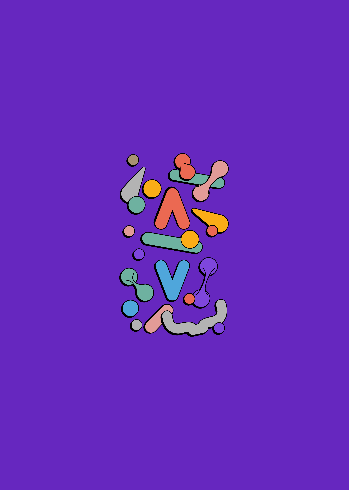

¿Qué es la Ingeniería de sistemas?

La Ingeniería de sistemas es una disciplina de la Ingeniería que se encarga de desarrollar, mejorar e implementar sistemas informáticos. Fuertemente vinculada con las matemáticas e informática, esta disciplina crea redes y sistemas al servicio de la organización que lo demande.
La Ingeniería de sistemas trabaja con el fin de contribuir al desarrollo científico y tecnológico mediante la investigación continua de nuevas tecnologías y procedimientos. Gracias a su carácter multidisciplinario, esta carrera abre la puerta a una gran variedad de empresas u organizaciones, tanto públicas como privadas, y en especial en aquellas de gran tamaño.